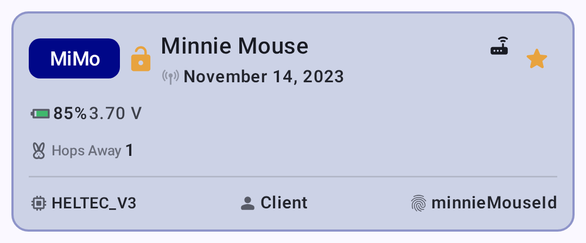
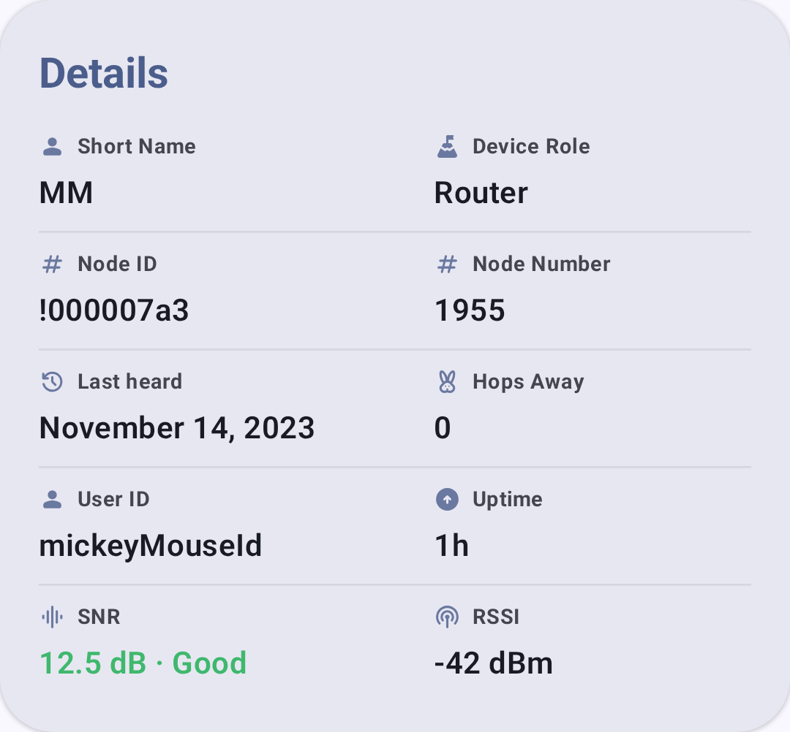
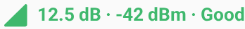
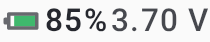
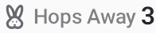
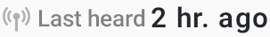

ノード
ノード画面には、メッシュネットワーク上で見えているすべてのデバイスが表示されます。
ノードリスト
ノードリストには、無線機が受信したすべてのノードが、次の情報とともに表示されます：
- ノード名： ユーザーが設定した正式名称
- 短縮名： 4 文字の識別子
- 信号品質： 最後に受信したときの信号強度
- 最後の通信： 最後に通信してからの経過時間
- 距離： 推定距離（位置情報が共有されている場合）
- バッテリー： リモートノードのバッテリー残量（テレメトリが有効な場合）
ノードのステータス表示
| バッジ | 意味 |
|---|---|
| 🟢 オンライン | 過去 2 時間以内に受信したノード |
| ⚪ オフライン | 2 時間を超えて受信していないノード |
| ⭐ お気に入り | ユーザーがお気に入りに設定したノード |
ノードは、過去 2 時間以内に受信していればオンライン、そうでなければオフラインとみなされます。「離席中」のような中間の段階はありません。
ノードの役割
ノードには、メッシュ上での動作に影響するさまざまな役割を設定できます：
| 役割 | 説明 |
|---|---|
| クライアント | 標準的なエンドユーザーのデバイス |
| クライアント・ベース | お気に入りノードの通信をルーター・レイトの優先度で扱い、それ以外の通信はクライアントとして扱います |
| クライアント・ミュート | 受信しますが、再送信はしません |
| クライアント・非表示 | クライアント・ミュートと同様で、さらにノードリストから隠れます |
| ルーター | メッセージの転送を優先し、中継のために起動し続けます |
| ルーター・レイト | 1 回だけ再送信するインフラノードですが、他のすべてのモードの後にのみ行います（補助的なカバレッジを提供します） |
| ⚠️ 非推奨（ファームウェア 2.3.15 で削除）。選択できなくなりました。代わりにルーターまたはクライアントを使用してください | |
| ⚠️ 非推奨（ファームウェア 2.7.11 で削除）。選択できなくなりました。代わりにルーターを使用してください | |
| トラッカー | 一定間隔での位置報告に最適化されています |
| センサー | テレメトリ報告に最適化されています |
| TAK | TAK システムと相互運用します（CoT を送受信） |
| TAK Tracker | TAK の位置報告のみ |
| ロスト＆ファウンド | 回収のために位置を継続的に発信します |
役割を選ぶ
ほとんどのユーザーは、デフォルトのクライアント役割のままにしてください。 次のような場合は、別の役割を検討してください：
- ルーター： 電源が安定した、固定された高所（屋上、丘の上など）にノードを設置している場合。 ルーターは他のノードのメッセージを中継するために常に起動し続け、メッシュのカバレッジ拡大に不可欠です。 バッテリー駆動のハンドヘルドデバイスではルーターを使用しないでください。
- ルーター・レイト： パケットを常に 1 回だけ再送信するインフラノードですが、他のすべてのルーティングモードの番が終わった後にのみ行います。 主要なルーターと競合することなく、ローカルのクラスターに補助的なカバレッジを提供します。
- クライアント・ベース： お気に入りノードとの間の通信をルーター・レイトの優先度で扱い（それらのメッセージが追加の中継カバレッジを得られるようにします）、それ以外はすべて通常のクライアントとして処理します。
- クライアント・ミュート： メッシュの通信を受信したいが、中継には貢献したくない場合。 監視専用のデバイスや、混雑した地域での輻輳軽減に便利です。
- トラッカー： GPS 位置の発信だけを目的とする無人デバイス（車両、ペット、資産など）。 発信の合間はスリープしてバッテリーを節約します。
- センサー： 環境テレメトリ（気温、湿度、大気質）を報告する無人デバイス。 電力プロファイルはトラッカーと同様です。
- TAK／TAK Tracker： ATAK／WinTAK システムと相互運用する場合にのみ必要です。 詳しくは TAK 連携 を参照してください。
💡 ヒント： メッシュは、ほとんどのノードがクライアントまたはルーターのときに最も良く機能します。 ミュートノードが多すぎるとメッシュの耐障害性が低下し、混雑した地域にルーターが多すぎると輻輳を招くことがあります。 目安としては、地域内のクライアント 5〜10 台につきルーター 1 台です。
暗号化の表示
ノードは、名前の横に暗号化ステータスのアイコンを表示します：
| アイコン | 意味 |
|---|---|
| 🔒 ロック | 通信は PKI（公開鍵基盤）を使用します。本人性が検証された、エンドツーエンドの暗号化です |
| 🔓 ロック解除 | 通信は共有チャンネルの PSK を使用します。暗号化されていますが、本人性は個別には検証されていません |
| ⚠️ 不一致 | 公開鍵の不一致。前回確認時からノードの鍵が変わっています（信頼する前に調べてください） |
💡 ヒント： PKI 暗号化（ファームウェア 2.5 以降）は、各ノードが固有の鍵ペアを持つため、チャンネル PSK より強力なセキュリティを提供します。 鍵の不一致の警告が表示された場合、そのノードはリセットされたか、侵害された可能性があります。
クイック操作
ノードリストから、次のことができます：
- ノードをタップすると詳細ページを表示します
- 長押しでクイック操作を表示します：
- お気に入りに追加／解除
- 通知のミュート／解除
- ダイレクトメッセージを送信
- 経路をトレース
- 無視／無視の解除
- ノードを削除
絞り込みと並べ替え
テキスト検索
検索欄に入力すると、名前または短縮名でノードを絞り込めます。 絞り込みは、入力に応じてリアルタイムで更新されます。
絞り込みトグル
| 絞り込み | 説明 |
|---|---|
| オンラインのみ | 過去 2 時間以内に受信したノードのみを表示します |
| 直接のみ | 直接（中継されていない）接続のノードのみを表示します |
| 不明なノードを含む | まだユーザー情報を送信していないノードを表示します |
| インフラを除外 | Hide infrastructure-role nodes (Router, Router Late, Client Base) |
| MQTT を除外 | MQTT のインターネットブリッジ経由でのみ受信したノードを非表示にします |
| 無視したノードを表示 | 以前に非表示またはミュートにしたノードを表示します |
並べ替えオプション
| 並べ替え | 説明 |
|---|---|
| 最後の通信（デフォルト） | 最近受信したノードを先頭に表示します |
| アルファベット順 | ノードの正式名称で並べ替えます |
| 距離 | 近いノードを先頭に表示します（位置情報の共有が必要） |
| ホップ数 | 中継ホップ数が少ないノードを先頭に表示します |
| チャンネル | チャンネルインデックスごとにグループ化します |
| MQTT 経由 | MQTT 経由と無線受信でグループ化します |
| お気に入り | お気に入りのノードを先頭に表示します |
ホップごとのノード数
ノードリストのアプリバーにあるホップヒストグラムのアイコンをタップすると、各ホップ距離にいくつのノードがあるかを示す棒グラフが開きます（0 = 直接、1 = 中継 1 回、以下同様）。 グラフを最後の通信の期間（すべての期間、1 時間、8 時間、24 時間）で絞り込むと、現在のメッシュの様子と、より長い期間での様子を比較できます。 ローカルメッシュがどれだけ混雑し、どれだけ広がっているかを手早く把握できます。
ノードの詳細
ノードをタップすると、詳しい情報を含む詳細ビューが開きます。 メトリクスとテレメトリの詳細については、ノードメトリクス を参照してください。

詳細画面には、デバイス情報、位置、操作ボタンが含まれます：

インラインのステータス表示で、主要なメトリクスをひと目で確認できます：
| 指標 | スクリーンショット |
|---|---|
| 信号品質 |  |
| バッテリー残量 |  |
| ホップ数 |  |
| 最後の通信 |  |
| 距離 |  |
デバイスのリンク（「購入はこちら」）
ノードのハードウェアが認識されると、詳細ビューに折りたたみ式の**「購入はこちら」**セクションが表示され、そのデバイスを購入したり詳しく知ったりできる場所（ベンダーの製品ページ、製品バリエーション、AliExpress・Amazon・対応小売店などの地域のマーケットプレイスの掲載）が、あなたの国に合わせて絞り込まれて表示されます。 各リンクは msh.to のリダイレクトサービスを通じて開きます。 一致するリンクがないデバイスでは、このセクションは表示されません。
すべてのリンクを一覧できる完全なディレクトリは、「設定 → デバイスのリンク」からも利用できます。
関連トピック
- ノードメトリクス：各ノードの詳細なテレメトリダッシュボード
- メッセージとチャンネル：ノードにダイレクトメッセージを送信
- マップとウェイポイント：ノードの位置を地図上で確認
- 探索：トポロジー探索のための経路トレースと隣接ノード情報
- 信号メーター：信号バーの意味を理解する